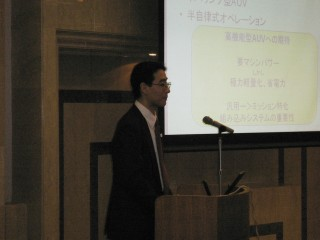
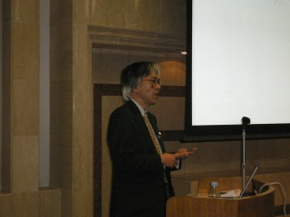
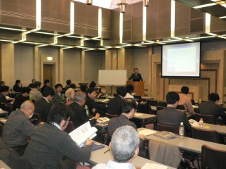

2005年度の活動
※ 議事録，資料は会員のみ閲覧することができます
※ .pdfファイルは、Adobe Acrobat(R) Readerを使って閲覧することができます
第６９回技術交流会
２００５年度 定期総会
第７０回技術交流会
第７１回技術交流会
第７２回技術交流会
- 日時：2005.7.4
- 場所：安保ホール(名古屋)
- 話題提供者：鈴木郁子氏（個人会員・シャープ）
- 内容：「擦り合わせる技術」
- 詳細：議事録（.pdf）
第７３回技術交流会
- 日時：2005.8.1
- 場所：浜松メイワン8F会議室（浜松駅ビル内）
- 話題提供者：竹内康人氏（鹿児島大学）
- 内容：「物作り体験講座・自分でトランジスタラジオを作ってみよう」
- 詳細：議事録（.pdf）
第７４回技術交流会
- 日時：2005.9.12
- 場所：安保ホール101会議室
- 話題提供者：大山博司氏（オークマ）
- 内容：「OSP-P200型NC装置におけるTOPPERSとWindowsの融合」
- 詳細：議事録（.pdf）
第７５回技術交流会
- 日時：2005.10.17
- 場所：豊橋商工会議所508会議室
- 話題提供者：加藤佳孝氏（西島株式会社）
- 内容：西島製NCの現状と今後の展望
- 詳細：議事録（.pdf）
システムハウス技術セミナー
第７６回技術交流会
- 日時：2005.11.14
- 場所：安保ホール101会議室
- 話題提供者：高野良昭氏（コニカミノルタビジネステクノロジーズ）
- 内容：機器制御における組込むファームウエア開発の実際 〜カラーＭＦＰ/プリンタエンジン制御用ＦＷ開発の事例紹介〜
- 詳細：議事録（.pdf）
第７７回技術交流会
- 日時：2005.12.12
- 場所：豊橋商工会議所508会議室
- 話題提供者：一橋 正己氏（神鋼電機（株）コンピュータシステム技術センター）
- 内容：組込みシステムの技術伝承の課題 - 始めはみんな組込システムだった
- 詳細：議事録（.pdf）
第７８回技術交流会
第9回CEST技術セミナー



- 日時：2006.2.13
- 場所：豊橋商工会議所 9Fホール
- 講師：近藤逸人氏(東京海洋大学)
- 内容：「ロボット技術の最前線：自律とコミュニケーション」
- 詳細：議事録（.pdf）
第７９回技術交流会
戻る
Copyright(C) 1999-2007 Consortium for Embedded System Technology.
All rights reserved.
Maintained by